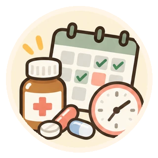
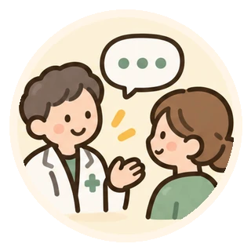

健康習慣と薬 · B · 基本編 2
食前・食後、飲む時間には意味がある？
B · 食事の有無・時刻と服薬

確認用ページ｜医療者による公開前の確認待ちです。
まずは、ここから
この記事の3つのポイント

食事は吸収にも関わる
服用時間の理由は、胃への負担だけではありません。

食べない日の対応は個別に
薬を全部中止する・全部いつもどおり飲む、とは決めない。

続けにくい時間は相談を
朝食を抜く習慣や夜勤も伝え、使い方を確認。
それぞれの役割を、一目で
生活の変化と薬を、合わせて確認
生活の中で気づくこと
食べる時刻や量の変化
朝食を抜く日や、食べられない日があることを伝えます。
薬について確認すること
薬ごとの条件を整理する
食事やほかの薬との間隔、体調不良時の対応を確かめます。
食事がとれないときの対応は、薬ごとの指示を確認してください。
本文で詳しく読む「朝食を抜いたけれど、食後の薬はどうすればいい？」「食前に飲み忘れたので、食後でもよい？」。いつもの食事が変わると、薬の時間にも迷いますね。
飲む時刻の理由は薬によって違うため、食べなかった日の対応も一律には決められません。 続けやすい飲み方を、普段の食事と合わせて考えましょう。[1,2]
1．「食後」は、胃への負担だけの問題ではない
食事は、薬が体内に入る量や速さに影響することがあります。食事と一緒に使うことで胃腸の不快感を軽くしたい薬もあれば、食べると十分に吸収されなくなる薬もあります。[1,2]
「胃が丈夫だから空腹でも大丈夫」「少し食べれば、どの薬も飲める」とは判断できません。薬袋の用法と、その薬に必要な条件を確かめましょう。
2．食前・食直前・空腹時は、同じ意味ではない
食前は一般に食事の約30分前、食後は食事の後の約30分以内が目安です。食間は食事中ではなく、食後約2時間が目安になります。ただし、食直前・食直後や、具体的な時刻・間隔の指定がある薬もあります。[1]
「空腹時なら、前の食事から何時間でもよい」とは限りません。 飲んだ後の食事・飲み物・ほかの薬にも条件がある製品があります。[2]
製品の例を詳しく：リベルサスの飲み方
経口セマグルチド製剤のリベルサスは、1日の最初の食事や飲水の前に空腹の状態で、約120mL以下の水で飲み、少なくとも30分は飲食やほかの内服薬を避ける指示があります。錠剤を割ったり砕いたりせずに服用します。[2]
これはこの製品の条件です。ほかの糖尿病薬や注射薬へ、そのまま当てはめることはできません。朝のほかの薬との順番も、薬剤師に確認してください。
3．朝食を抜いた日、少ししか食べられない日は
「食後の薬を全部やめる」「全部いつもどおり飲む」のどちらも、薬によっては困ることがあります。特に血糖を下げる薬では、食事量と薬の働きが合わなくなると低血糖につながる場合があります。[3]
何も食べられない、嘔吐や下痢があるときは、当日のうちに処方元や薬局に連絡し、薬ごとの対応を確認しましょう。すでに体調不良時の指示をもらっている場合は、それを優先します。インスリンも含めて、一括して中止しないでください。
4．飲み忘れを、次の食事で取り戻そうとしない
飲み忘れた分をどうするかは、薬の種類や次の服用までの時間によって変わります。自己判断で2回分をまとめて飲まず、薬袋や説明書を確認し、迷ったら薬局に相談してください。[1]
「食後に気づけばいつでもよい」とするルールも作れません。日頃から、飲み忘れたときの対応を薬ごとにメモしておくと役立ちます。
5．生活に合わない用法は、相談してよい
朝食をとる習慣がない、夜勤で食事時刻がずれる、ほかの薬と順番が重なる。そうした事情も、薬剤師に伝えてください。
薬剤師は一日の流れを聞き、守る必要のある条件と、調整できる部分を整理します。必要に応じて処方元に確認し、続けられる方法を考えます。
参考文献・参照先
2026年10月22日確認。製品の用法を優先してください。用語の基本とQ&Aは薬はいつ飲む？にもまとめています。